7 User Interfaces¶
In the last chapter, you explored the wonderful world of Unity’s input systems, and you learned the basics of the physics system. Now that you can move the player avatar around in the world, it’s time to add a title screen and make a user interface for the dialogue system. Along the way, you’ll learn all about the most common UI elements and how to create windows that can automatically resize to fit their contents. You can use this to let the NPCs tell the player avatar anything you want — like silly dad jokes, for example!
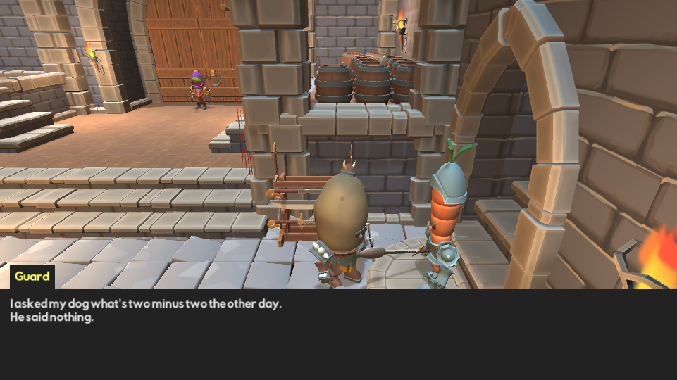
Whether it’s bouncy hearts that show your remaining lives, a green stamina meter that lets you know how many more dodge rolls you can perform or a simple piece of text that explains the stats of your equipped weapon, user interfaces are everywhere.
A user interface — commonly referred to as the UI — can consist of text, images, sliders, buttons and more. The combination of these elements is crucial to delivering information to the player.
Title screen overview¶
As a minimum, a title screen should show a game’s name and a way to start playing. More elaborate title screens can include an options screen and a way to show the credits. They might even have dynamic backgrounds. In the case of the Veggie Gladiators game you’ve been tinkering with for the last two chapters, the title screen is simple, but it does use several types of UI elements, like text, an image and a button.
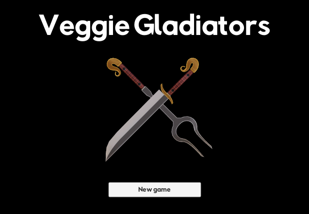
First, open the starter project for this chapter in Unity. Create a new empty scene by right-clicking the RW / Scenes folder in the Project view and selecting Create ▸ Scene. Name this new scene Title and double-click the scene asset to open it in the editor.

When adding a new scene to your game, it’s good practice to add it to the Scenes list in the Build Settings because that includes the scene in the final game. Not doing this will result in errors when you try to load the scene.
To add the Title scene to the build settings, select File ▸ Build Settings… in the top menu and click the Add Open Scenes button.
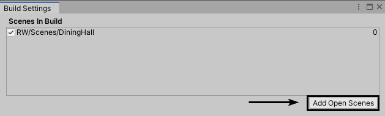
Next, close the Build Settings window; it’s time to get the scene ready.
Take a look around the editor. You’ll see a beautiful blue sky in both the Scene and Gameviews. Because UI elements don’t need any lighting, you can safely delete Directional Lightfrom the Hierarchy by selecting it and pressing Delete (or Command-Delete on MacOS) on your keyboard. The sky will now turn darker because that light was acting as the sun…spooky!
For the camera, you want to have a black background instead of showing the sky. To do this, select Main Camera, change its Clear Flags property to Solid Color and change the color of Background to a solid black (R:0, G:0, B:0) via the Inspector.

Perfect! Now you have an empty void that’s begging to be filled with UI elements.
Canvas¶
Unlike the GameObjects you’ve seen until now, UI elements can’t be placed just anywhere in the Hierarchy — they need to be children of a canvas. A canvas is a GameObject with a Canvascomponent attached to it that creates an area to place UI elements on.
Create a new canvas by clicking the + button at the top left of the Hierarchy and selecting UI ▸ Canvas. This will create two GameObjects at the root of the Hierarchy: Canvas and EventSystem. The latter is used to pass input to the canvas, like button presses and mouse clicks.
Unfortunately, Unity adds a Standalone Input Module component to the EventSystem by default — which is used by the old input system, not the new one you’re using. To fix this, select EventSystem and click the Replace with InputSystemUIInputModule button in the Inspector.
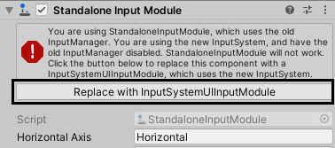
This will remove the Standalone Input Module component and replace it with an Input System UI Input Module component. Now, select Canvas in the Hierarchy and take a look at the Inspector. By default, a canvas comes with four components: Rect Transform, Canvas, Canvas Scaler and Graphic Raycaster.
Each of these components plays an important role in how the canvas behaves.
Rect Transform component¶
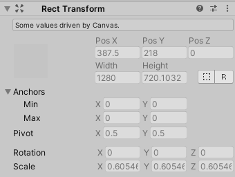
A Rect Transform component is the 2D counterpart to the familiar Transform component. You’ll use it for all UI elements. Instead of just having X, Y and Z values for its position, rotation and scale, it also has a width and a height, along with anchor points and pivot points. It’s essential to know what these terms mean, so here’s a quick overview:
- Position: The Pos X, Pos Y and Pos Z properties are used to set the position of a Rect Transform. These are used to move the UI element on the canvas. These values are relative to the anchor points and the pivot point. By default, the anchors and pivot are centered, so that’s why a value of (X:0, Y:0, Z:0) centers the UI element on the canvas.
- Dimensions: This is the width and height of the UI element.
- Anchor points: Anchor points are the points at which a UI element is attached to its parent. They’re represented by the white “flower” and its four petals. These values are normalized — in other words, they range from 0 to 1, with 0 being the utmost left or top and 1 being the utmost right or bottom. There are two anchor points — Min and Max — which make a rectangle. Min is the position of the lower-left corner of the rectangle, while Max is the position for the upper-right corner. The zero position for these points is at the lower-left corner of the parent. For example, with the anchor points set to (X:0.5, Y:0.5) and (X:0.5, Y:0.5), the UI element is anchored to the center of their parent — in this case, the canvas. With a value of (X:0, Y:0) and (X:1, Y:0), the anchor is stretched at the bottom.
- Pivot point: The pivot point is the normalized position of the point on the UI element that’s used for rotations and scaling. Imagine pricking a needle through a picture and then trying to rotate the picture. It will rotate around the needle. That’s the pivot point!
As you may have noticed, in the case of the canvas, you can’t edit the Rect Transform values. They are automatically set by the Canvas component.
All of this may seem daunting at first, but how these values are used together will become a lot more clear once you start using them. And, Unity comes with some handy shortcuts to help you along.
Canvas component¶
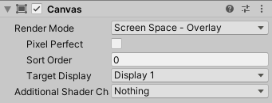
The Canvas is what’s doing the heavy lifting. It adjusts its size based on the Render Mode and draws all of its children to the screen in order. Here’s an overview of its properties:
- Render Mode: This property changes the way the UI elements are rendered to the screen. There are three options:Screen Space - Overlay: This render mode draws UI elements on top of the scene. The canvas will get resized to fill the screen automatically based on the game’s resolution.Screen Space - Camera: This is the same as the previous render mode, but the canvas is placed at a distance from a camera. Changes to the camera will reflect on the UI elements in the canvas. Increasing the field of view, for example, will distort the UI.World Space: This mode makes the canvas behave like a regular 3D GameObject, as it will have a 3D position, rotation and scale in the scene. Use this mode to create user interfaces that are a part of the scene itself — like monitors, watches, smartphone screens, you name it!
- Pixel Perfect: Enabling this property forces all UI elements to snap to rounded pixel values, resulting in an image that is potentially more crisp.
- Sort Order: When using multiple canvases, you can decide the order in which they should be drawn using this property.
- Target Display: Use this to draw this canvas on another display if you’re creating a game that spans over multiple monitors.
- Additional Shader Channels: Additional channels can be added to the canvas as data feeds for custom UI shaders.
For the title screen — and for most use cases — the default canvas values will be fine.
Canvas Scaler component¶
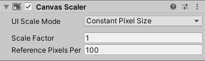
This component automatically changes the size of UI elements in the canvas based on its scale mode. In a nutshell:
- UI Scale Mode: This drop-down changes the way the UI elements will be scaled. Here are the options:Constant Pixel Size: UI elements will be the same size in pixels, regardless of the canvas size.Scale With Screen Size: UI elements scale with the screen size. This option makes setting up a canvas for multiple resolutions a breeze.Constant Physical Size: UI elements will be the same physical size regardless of the canvas size or the display resolution.
- Scale Factor: Multiplies the size of all UI elements by this value.
- Reference Pixels Per Unit: Every image — called a sprite — used on a canvas has a Pixels Per Unit property, which can be used to decide how many pixels can fit in a single world unit. Unlike 3D models, 2D assets don’t have real-world size, only pixels. These need to be mapped to units that Unity can use. By default, one world unit can hold 100 pixels, but you can change that via this value
Now, to make things easy, change the UI Scale Mode to Scale With Screen Size and set the Reference Resolution to (X:1280, Y:720). This will make the canvas layout act as if the screen resolution was 1280x720 at all times, and it will scale the user interface up or down when the actual resolution is higher or lower, respectively. This makes creating the UI a lot more straightforward because you don’t have to worry about dynamically resizing or moving certain elements to cater for every player’s display. This will become a lot more clear once you start adding some UI elements to the canvas.
Graphic Raycaster component¶
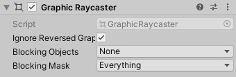
This component passes mouse clicks and finger taps to the event system. It has three properties:
- Ignore Reversed Graphics: Enabling this prevents interacting with UI elements that are turned away from the canvas, which are invisible.
- Blocking Objects: A drop-down to decide whether 2D objects, 3D objects or both can block interaction with UI elements in this canvas.
- Blocking Mask: The layers that will block interactions.
The defaults for this component make sense for this project, so you can leave them alone.
Adding UI elements¶
Time to get down to business! The first UI element you’ll need to add is the title itself at the top. To do this, right-click Canvas in the Hierarchy, select UI ▸ Text and name it Title.
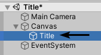
Now, click the 2D button at the top left of the Scene view to switch to 2D mode, and zoom out until you can see the whole canvas.
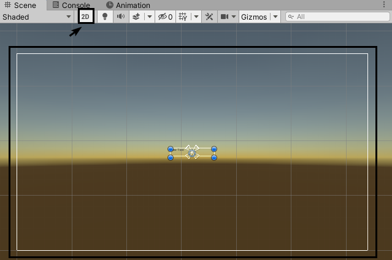
Look carefully, and you’ll see tiny text that reads “New Text.” Not really impressive, is it? Like all GameObjects, UI elements come with components, so take a look at the Inspector to see what makes this text tick.
Text¶
The very first component is a Rect Transform, which can be edited this time. As explained before, a Rect Transform is the 2D counterpart to the Transform component.
Before moving on, change the Height of Title to 200. You’ll need the extra space for the big font later on. Next, the text UI element should be stretched along the top of the canvas, with the text itself centered inside it both vertically and horizontally.
You could calculate the values for the anchor points yourself, but Rect Transformcomponents come with a nifty Anchor Presets menu to make the process a lot more straightforward.
To anchor the Title along the top of the canvas, click the Anchor Preset button at the top left of the Rect Transform component.
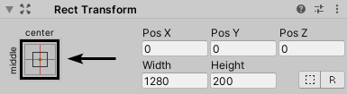
This opens up the Anchor Preset menu, which has the most common anchoring options right there for you to pick from.
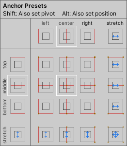
Simply clicking on any of these buttons will change the anchor points accordingly. Holding Shift and/or Alt while clicking will change the pivot point and/or the position, respectively.
To expand Title along the top of the canvas, hold Alt and click the button that has the rectangle at the top with blue lines from left to right indicating the stretch.
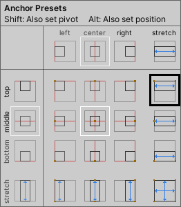
After doing this, you can see that the UI element is now stretched at the top of the canvas in the Scene view.
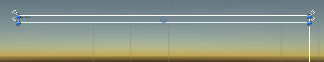
The text is still a bit small and not the right font or color, so divert your attention back to the Inspector again. Besides the Rect Transform component, there’s a Canvas Renderercomponent which simply signals the canvas to draw the UI element. And, more importantly, there’s a Text component that holds all the properties for the text. If you’ve ever used a rich text editor before, a lot of the properties will already be familiar to you.
First, change the value of the Text property to Veggie Gladiators instead of New Text. Then, click the Picker button next to the Font property and select the RabbidHighwaySignII font in the list. Next, change the Font Size to 80 and use the Alignment buttons to center the text both horizontally and vertically. Finally, change the Color to white (R:255, G:255, B:255).
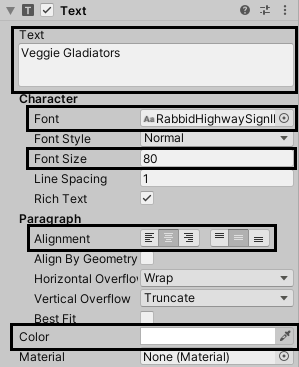
After doing all this, take a look at the Game view. You’ll see the title prominently displayed at the top.
Other commonly used properties of the Text component include:
- Font Style: This changes the text style to bold, italic or both.
- Line Spacing: This is a multiplier for the vertical distance between lines set in the Textproperty.
- Horizontal Overflow: When the text overflows its horizontal boundaries, there are two options to handle this: Wrap or Overflow. Wrapping the text will move any text that’s outside the boundaries to the next line(s). The Overflow option simply lets the text go outside its set boundaries.
- Vertical Overflow: Similarly to the horizontal overflow, when text overflows its vertical boundaries, there are two options to handle this: Truncate or Overflow. Truncating — or shortening — the text will not draw any text that’s outside the boundaries. The Overflowoption lets the text go outside its set boundaries.
- Best Fit: By enabling this, the Font Size property will be ignored and the text will be enlarged as far as it’s allowed until it fits its parent. While this may sound useful, it can make a UI look very cluttered when used with multiple text boxes, as the different font sizes can be jarring. Use with caution.
Image¶
Now that the title text is done, it’s time to add the logo in the middle of the screen. Right-click Canvas in the Hierarchy and select UI ▸ Image. Name this new image Logo, and look to the Inspector. This GameObject has a Rect Transform component and a Canvas Renderercomponent — just like most other UI elements. There’s an Image component attached, as well.
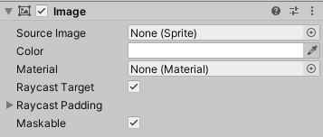
This is a simple component when compared to the dozen or so properties of the Textcomponent. The Source Image property allows you to use a sprite as an image, and the Colorproperty tints the image. Pretty straightforward!
Click the Selector button next to Source Image and select the Logo sprite from the list. These crossed weapons represent the power and unity of the veggie gladiators.
The image is a bit small though, don’t you think?
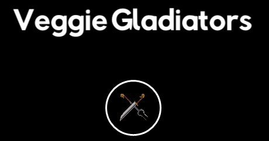
Images, just like other UI elements, get their position and size from the Rect Transformcomponent. To make the logo bigger, change its Width and Height to 400 units.
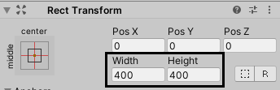
The final piece of the UI puzzle is the button that will start the game.
Button¶
Right-click Canvas again, select UI ▸ Button to add a button and name it New Game Button. Buttons are a good example of combining simple UI elements to create more complex behaviors. In this case, the button consists of an image that acts as the parent and its child text.
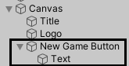
To make the button receive input and have optional animations, the parent GameObject comes with a Button component.
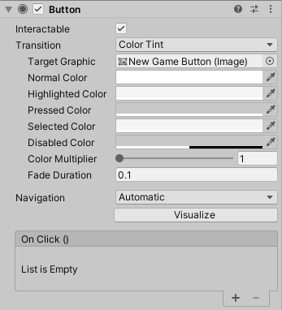
Most of the button’s properties are actually used to animate its color when the button is hovered over, clicked and selected. Simply set a color for these, and the button will be tinted when the accompanying state change is triggered. Here’s an overview of the other properties:
- Interactable: When this is checked, the button accepts input. When unchecked, the button is in a disabled state.
- Transition: The type of transition between the different states. None disables state changes, Color Tint fades between color tints and Sprite Swap changes the target graphic sprite depending on the state. Animation is the most advanced option, as it uses an animation controller to switch between the states — meaning just about anything can change depending on the state.
- Target Graphic: The Image that should be used for transitions.
- Color Multiplier: This multiplies the tint color with the target graphic’s original color. The higher the value, the more of the tint color will get blended in.
- Fade Duration: The amount of time in seconds between color tint fades.
- Navigation: By default, Unity can automatically detect the order of the selection of interactable UI elements. When multiple buttons are in a horizontal row, for example, and you press the right arrow key, the button on the right side of the currently selected button will get selected. This property is useful when building forms.
- On Click (): This event is triggered when a player presses the button.
Now that you know your way around the button, start by changing its Width and Height to 300and 50 respectively. Next, change its anchor point to be at the middle point of the bottom of the canvas via the Anchor Presets menu. There’s no need to hold Alt this time, though, because you’ll set its position manually.
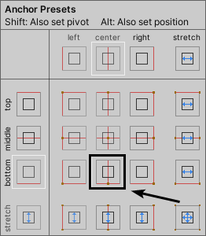
To set its position, move the button down a bit by setting Pos Y to 100.
The final step is to tweak the button’s text. Select the Text child of New Game Button, change its Text value to New game and change its Font to RabbidHighwaySignII. Now, change the Font Size to 20, and you’re done with the visuals.
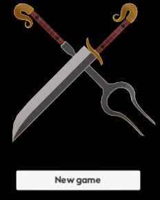
All that’s left is to add the logic to the button. You’ll find a small script named SceneLoaderthat can load another scene based on its name in the project files.
To add it to the scene as a component, add a new empty GameObject to the root of the Hierarchy. Click the + button to the top left of Hierarchy and choose Create Empty. Name it SceneLoader. As a matter of good practice, you should reset the transforms through the Reset option in the three-dot menu of the Transform component attached to the GameObject.
Next, add the Scene Loader component to it. With the component in place, the New Game Button can now load a scene via its On Click event.
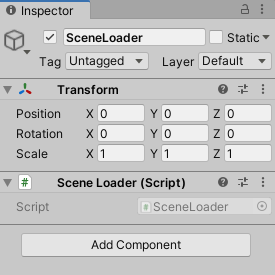
Select Canvas ▸ New Game Button in the Hierarchy and add a new empty function call to On Click () by clicking the + button. Now, drag SceneLoader from the Hierarchy to the Object property of the function call and select SceneLoader.LoadScene in the function drop-down. The method LoadScene takes a string as an argument, so a text field will appear below the function drop-down. Enter DiningHall in this text field. That’s the name of the dining hall scene asset found in RW / Scenes.
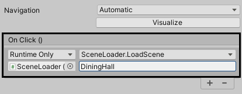
Now, play the scene and click the New game button. If everything is hooked up correctly, the dining hall scene will load.
With the title screen finished, it’s time to use the skills you’ve learned and take another look at the dining hall scene!
Interaction system¶
Open the dining hall scene by double-clicking DiningHall in RW / Scenes. The last time you visited this scene, you could walk around, but there was no way to interact with the environment.
Compared to the project in the last chapter, this chapter’s project has been given a simple interaction system. In a nutshell, the player avatar can now detect and interact with GameObjects that have a component attached to them derived from Interactable Object as long as they’re on the Interactable layer.
Explaining this in more detail:
- There’s now an Interaction System component attached to Player Avatar. It checks for GameObjects in front of the avatar on the Interaction layer with Interactable Objectcomponents attached to them. If it finds any, it keeps an eye on them. If the player triggers the Interact action by pressing Space, for example, an interaction is attempted with the nearest interactable GameObject. You can find the source script in RW / Scripts / Interaction.
- The PlayerAvatar script now implements the
Interactmethod to call the Interaction System. - There’s a new abstract class named
InteractableObject. It stores the name and the verb for the interaction and has an abstract method calledInteractthat needs to be implemented by any class that derives from it. The source code for this script is also located in RW / Scripts / Interaction. - There’s an example component named Play Animation On Interaction, which derives from the abstract
Interactableclass. This component can play an animation and a sound effect when interacted with. Again, find the source in the RW / Scripts / Interaction folder.
Note: An abstract class or method indicates that the class or method is not completely implemented yet, so it can’t be used on its own. It serves as a base to be built upon. In the case of the
InteractableObjectclass, theInteractmethod won’t do anything by itself — it’s like a placeholder. That’s why the PlayAnimationOnInteraction script derives fromInteractableObjectand fills in the blanks, starting an animation and playing a sound effect.
To show off what this does in practice, play the scene and walk the avatar towards the big door. Then, go left up the stairs. There’s a treasure chest waiting there to be opened.
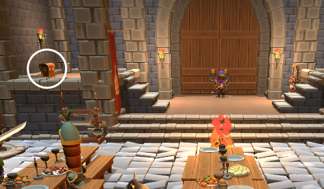
Now, stand facing the chest and press Space on your keyboard. The chest will animate and play a sound effect!
This chest can be found in the Hierarchy in Interactable / Objects / TreasureChest. It has an Animator component, a Box Collider and the Play Animation On Interaction component attached to it.
That last component is what holds the important information.
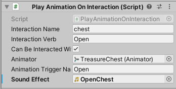
This component derives from InteractableObject, so its first three properties come from that script, while the others are specific to the Play Animation On Interaction component. At the moment, the name and verb can’t be seen anywhere because the dining hall scene doesn’t have UI elements yet. Ideally, a little window that says what action can be performed should pop up when the avatar can interact with an object. Time to add that!
Adding a user interface for interactions¶
Your goal is to add a window with some text — like the one pictured below — and extend the interaction system. The process is very similar to what you did with the title screen.
First, add a canvas to the root of the dining hall scene.
Click the + button at the top left of the Hierarchy and select UI ▸ Canvas. Now, change the UI Scale Mode of the Canvas Scaler component to Scale With Screen Size, and set its reference resolution to (X:1280, Y:720). Next, select EventSystem in the Hierarchy and click the Replace with InputSystemUIInputModule button in the Inspector.
With the canvas set up, you can add a window as its first child. Right click Canvas, select UI ▸ Image and name it Interaction Window. You might wonder why there’s no UI ▸ Window option. That’s because the UI system doesn’t actually know the concept of a window — so an image will have to do. :]
Change Pos Y of its Rect Transform to 80 to move it up a bit, and change its Width and Heightto 250 and 45, respectively. Next, go to the Image component attached to this GameObject and use the color picker to change its Color to a dark grey (R:34, G:34, B:34). The window should now look like a wide, dark rectangle above the avatar’s head.
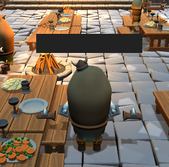
Now, add some text inside of it by right-clicking Interaction Window, selecting UI ▸ Text and naming it Interaction Text. Change its Text value to Interaction description goes here and change its Font to RabbidHighwaySignII.
Finally, change its alignment to be centered both horizontally and vertically, and change its Color to a light grey (R:221, G:221, B:221).
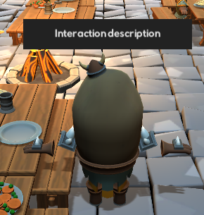
To connect the interaction window and its text to the interaction system, you’ll need to make a few changes to the InteractionSystem script. Double-click the InteractionSystem script found in RW / Scripts / Interaction to open it in your code editor.
All of the checking for interactable objects happens in FixedUpdate, so that’s where you’ll want to hook up the logic for the interaction window. Before doing that though, the interaction system needs to be aware of the UI elements. First, add this using directive right below using UnityEngine;:
using UnityEngine.UI;
With this added, you can easily reference UI components. Now, add the following variable declarations above private PlayerAvatar playerAvatar;:
public GameObject interactionWindow;
public Text interactionText;
These will act as references to Interaction Window and Interaction Text. The final step is toggling the visibility of the window and setting its text to the right value. To do that, find the following code at the end of FixedUpdate (minus the comments):
if (closest != null)
{
interactionTarget = closest.GetComponent<InteractableObject>();
// A
}
else
{
interactionTarget = null;
// B
}
This is the piece of code that checks if there’s a valid interactable object, which then gets put in interactionTarget for later use. If the if statement rings true, that means an interactable object was found, so that’s a good place to put the code to show the interaction window. Put the following code in the place marked by // A in the code snippet above:
if (!interactionWindow.activeSelf) // 1
{
interactionWindow.SetActive(true); // 2
}
interactionText.text = interactionTarget.interactionVerb
+ " " + interactionTarget.interactionName; // 3
Here’s what this does:
- Checks if the interaction window isn’t activated already.
- Activates the interaction window, making it visible.
- Sets the interaction text to “VERB NAME.” This can be “Open chest” or “Pull lever,” for example.
To hide the interaction window if there are no interactable objects nearby, add the following code below interactionTarget = null, in the place marked by // B:
if (interactionWindow.activeSelf)
{
interactionWindow.SetActive(false);
}
In the case there’s no interactable object in sight, this will deactivate the interaction window if it was activated before.
That’s it for the scripting side of things! Save the script and return to the Unity editor to connect everything.
Select Player Avatar in the Hierarchy and take a look at its Interaction System component.
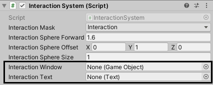
The two variables you’ve added to the script are now visible as properties. Drag Interaction Window and Interaction Text from the Hierarchy to the properties with the same name to link the references.
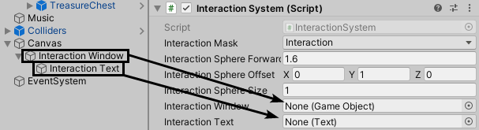
Now play the scene and walk up to the treasure chest again. The interaction window will pop up and show “Open chest” when you’re looking at the chest. It will disappear when you move away.
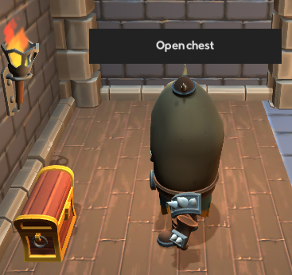
Awesome! To make it even better, you can make the window automatically adjust its size depending on the text inside of it. This is where two useful UI components come into play: Content Size Fitter and Vertical Layout Group. Select Interaction Window and add both a Content Size Fitter and a Vertical Layout Group component to it.
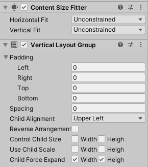
A Content Size Fitter is a layout controller that adjusts the size of the Rect Transform on the same UI element it’s attached to. It can automatically resize the UI element based on the minimum size or the preferred size. By default, UI elements don’t have either of these, though, which is where the Vertical Layout Group comes in.
Vertical Layout Group components can be added to a parent UI element and will automatically place and resize the children vertically. You can easily create lists with this component. To demonstrate this, select Interaction Text and press Control-D or Command-D a couple of times to duplicate it.
You’ll notice that the text elements will nicely stack in a vertical line — although most will fall somewhere out of the window.
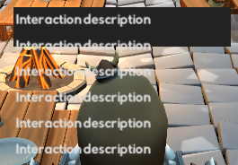
To prevent this from happening, you want the window to change its size depending on the text. Select Interaction Window and change the Horizontal Fit and Vertical Fit fields of Content Size Fitter to Preferred Size. This will enlarge the window to go around the text slightly, but not all text will be visible. The full sentence is “Interaction description goes here,” but you can only see a part of it.
To fix that, let the Vertical Layout Group take care of text sizing by checking both the Widthand Height checkboxes next to Control Child Size.
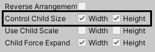
You’ll see all of the text, but it’s a bit cramped. You can add some padding to the borders of the window by setting all the Padding values in the Vertical Layout Group to 15.
The text will now have some space around it.
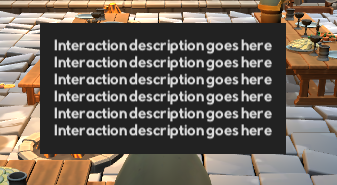
Now, delete the duplicate Interaction Text GameObjects. You’ll only need one. Play the scene and walk up to the chest. The window fits perfectly around the text.
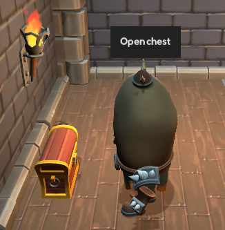
That concludes this chapter! Now you know about some of the most common UI elements and how to use them. In the next chapter, you’ll complete the game by making the characters speak with a dialogue system that utilizes scriptable objects.
Key points¶
- UI elements need to be children of a Canvas.
- A Canvas component creates an area to place UI elements on.
- The EventSystem passes input to the canvas.
- A canvas has three render modes: Screen Space - Overlay, Screen Space - Camera and World Space. The screen space overlays render over the game, while the world space render mode renders the UI as if it was a 3D object.
- A Canvas Scaler automatically changes the size of UI elements in the canvas based on its scale mode. The easiest mode to work with is Scale With Screen Size.
- Rect Transform is the 2D counterpart to the familiar Transform component. It sets the position, size and anchor points of a UI element.
- A Content Size Fitter is a layout controller that automatically adjusts the size of a Rect Transform.
- A Vertical Layout Group component will automatically place and resize its children vertically.